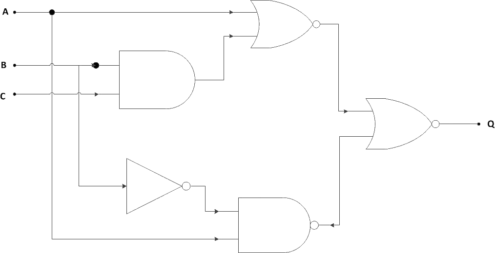

Theory
De-Morgan, a mathematician developed a pair of important rules regarding group complementation (complement of a group of terms) in Boolean algebra. These theorems state that “AND” and “OR” operations are interchangeable through negation.De-Morgan’s theorems describe the equivalence between gates with inverted inputs and gates with inverted outputs.
Theorem 1 :-
The complement of the sum of two or more variables is equal to the product of the complement of the variables.
For two variables A and B this theorem is written in Boolean notation as follows :-
i.e a NAND gate is equivalent to a Negative-OR gate i.e
Truth Table of Theorem 1:-
| A | B | A+B | (A+B)' | A' | B' | A'.B' |
|---|---|---|---|---|---|---|
| 0 | 0 | 0 | 1 | 1 | 1 | 1 |
| 0 | 1 | 1 | 0 | 1 | 0 | 0 |
| 1 | 0 | 1 | 0 | 0 | 1 | 0 |
| 1 | 1 | 1 | 0 | 0 | 0 | 0 |
Mathematical Proof-
To prove this theorem we need to prove complementarity laws which states that
i.e a logical variable/expression when added with its complement produces the output as 1 and when multiplied with its complement the output as 0.
Let us assume that P = (A+B) where P, A, B are logical variables.
Then, according
to complementation law it is known that
If P = A+B, then P’= (A+B)’
If P’ i.e. (A + B)’= A’B’
then,
- (A + B)+(A’.B’) must be equal to 1 [as X+X’=1]
- (A + B).(A’.B’) must be equal to 0 [as X.X’=0]
Starting from L.H.S. of part (a),
= (A+A’+B).(A+B+B’) [as X+Y=Y+X]
= (1+B).(A+1) [as X+X’=1]
= 1.1 [as 1+X=1]
= 1 [as X.1=1]
Thus first part is proved.
Now L.H.S. of part (b),
= A’.B’.A + A’.B’.B [as X.(Y+Z)=X.Y+X.Z]
= A.A’.B’ + A’.B.B’
= 0.B + A’.0 [as X.X’=0]
= 0
Thus, second part is proved.
Therefore, De-Morgan’s first theorem is proved.
Theorem 2 :-
The complement of the product of two or more variables is equal to the sum of the complement of the variables.
For two variables A and B this theorem is written in Boolean notation as follows :-
i.e a NOR gate is equivalent to a Negative-AND gate i.e
Truth Table of Theorem 2:-
| A | B | A.B | (A.B)' | A' | B' | A'+B' |
|---|---|---|---|---|---|---|
| 0 | 0 | 0 | 1 | 1 | 1 | 1 |
| 0 | 1 | 0 | 1 | 1 | 0 | 1 |
| 1 | 0 | 0 | 1 | 0 | 1 | 1 |
| 1 | 1 | 1 | 0 | 0 | 0 | 0 |
Mathematical Proof-
Let us assume that P = A.B then P’ = (AB)’
If P’ i.e. (A.B)’= A’+B’ then
- (A.B)+(A’+B’) must be equal to 1 [as X+X’=1]
- (A.B).(A’+B’) must be equal to 0 [as X.X’=0] Starting from L.H.S. of part (a)
= (A’+B’+A).(A’+B’+B) [as X+YZ =(X+Y)(X+Z)]
= (A+A’+B’).(A’+B+B’)
= (1+B’).(A’+1) [as X+X’=1]
= 1.1 [as 1+X=1]
= 1 [as X.1=1]
Thus, first part is proved.
Now L.H.S. of part (b)
= A.A’.B + A.B.B’ [as X.X’=0]
= 0.B + A.0
= 0+0
= 0
Thus, second part is proved.
Therefore, De-Morgan’s second theorem is proved.
Although we have used De Morgan’s theorems with only two input variables A and B, they are equally valid for use with three, four or more
input variable expressions.
For example, For a 3-variable input
- (A+B+C)’ = A’.B’.C’
- (A.B.C)’ = A’+B’+C’
Applications
- Engineering-
- Set Theory
- Computer Programming
- A group of negated ands is the same as negated group of ors, i.e,
(!a && !b && !c) === !(a || b || c) - A group of negated ors is the same as a negated group of ands, i.e,
(!a || !b || !c) === !(a && b && c)
De Morgan’s theorems are used to simplify Boolean expressions to build equations using only one sort of gate, generally NAND or NOR gates. This can lead to cheaper hardware. For practical implementations, NOR, NAND and NOT gates work best.
For example, using De Morgan’s law,
a long bar extending over the term AB acts as a grouping symbol when stretched over more than one variable. De-Morgan’s theorem
may be thought of in terms of breaking a long bar symbol. When a long bar is broken, the operation directly underneath the break changes from addition to multiplication, or vice versa, and the
broken bar pieces remain over the individual variables.
When multiple “layers” of bars exist in an expression, one may only break one bar at a time, and it is generally
easier to begin simplification by breaking the longest (uppermost) bar first.
Let’s apply the principles of De-Morgan’s theorems to the simplification of a gate circuit:
 As always, our first step in simplifying this circuit must be to generate an equivalent Boolean expression. We can do
this by placing a sub-expression label at the output of each gate, as the inputs become known. Here’s the first step in this process:
We can label the outputs of the first NOR gate and the NAND gate. When dealing with inverted-output gates, it is easier to
write an expression for the gate’s output without the final inversion, with an arrow pointing to just before the inversion bubble. Then, at the wire leading out of the gate (after the bubble),
the full, complemented expression is written. This helps ensure a complementing bar in the sub-expression.
Finally, we write an expression (or pair of expressions) for the last NOR gate:
Now, we reduce this expression using the identities, properties, rules, and theorems (De-Morgan’s) of Boolean algebra:
The equivalent gate circuit for this much-simplified expression is as follows:
De Morgan's Laws describe how mathematical statements and concepts are related through their opposites. In set theory, De Morgan's Laws relate the intersection and union of sets through complements.
De Morgan's Laws for Sets :- For sets, De Morgan's Laws are simply observations about the relation between sets and their complements. An easy way to visualize these rules is
through "Venn Diagrams ".
Complement of an Intersection of Two Sets
Observe the union of the complements of two sets. On a Venn Diagram, this union covers all space in the Venn Diagram except for the intersection of the two sets. Hence , De Morgan's Law for the complement of an intersection of two sets is shown below :- i.e, the complement of the intersection of sets A and B is equal to the union of Ac and Bc.
i.e, the complement of the intersection of sets A and B is equal to the union of Ac and Bc.
Complement of union of two sets
Let us observe the intersection of the complements of two sets. On a Venn Diagram, this intersection covers all space in the Venn Diagram except for the union of the two sets. Hence, De Morgan's Law for the complement of a union of two sets is shown below :- The complement of the union of two sets is equal to the intersection of Ac and Bc.Generalization of the Complement of an Intersection of Sets
De Morgan's Laws can be generalized to any number of sets.Let {} be a set of sets. The complement of the intersection of these sets is: The ∩ and U symbols above are used to represent an intersection or union of many sets.
For example, Suppose there are four sets: B1, B2, B3 and B4.
The union of these sets could be represented by (B1 ∪ B2 ∪ B3 ∪ B4). However, it could be represented more concisely with
Generalization of the Complement of a Union of Sets
Let {A1 , A2 , … , An−1 , An} be a set of sets.The complement of the union of these sets is: Because these generalizations require finding the unions and intersections of many sets, it is important to consider the principle of inclusion and exclusion when calculating the cardinality of sets with De Morgan's Laws.
Applied to set theory, De Morgan’s law states –
De Morgan’s law is something that any student of programming eventually needs to deal with. Understanding of De Morgan’s law in programming is critical if we want to know how to write code that negates two Boolean conditions.
De Morgan’s laws state that specific Boolean statements can be written in different ways to the same effect. The precise definition can be seen here.
The first rule expresses that a group of negated ands is the same as a negated group of ors. This can be used any time you want to take action when at least one condition must be met.
In the
below example, we will check that at least a user name, user id, or user email is provided. If not, we will throw an error.
Here we express it as (!a && !b && !c) :
const userName = null;
const userId = null;
const userEmail = null;
if(!userName && !userId && !userEmail) {
throw new Error('At least one user identifier must be passed');
}
Here we express it as !(a || b || c) :
const userName = null;
const userId = null;
const userAlias = null;
if(!(userName || userId || userAlias)) {
throw new Error('At
least one user identifier must be passed');
}
By using the second method, we can simply read this as “at least one of these is required.”
The second rule expresses that a group of negated ors is the same as a negated group of ands. This can be used any time you want to take action when there are a series of conditions that must be met.
In the below example, we will check that a sequence of requirements are provided. If not, we will throw an error.
Here we express it as (!a || !b || !c) :
const requirementA = true;
const requirementB = false;
const requirementC = true;
if(!requirementA || !requirementB || !requirementC)
{
throw new Error('All of the requirements must be met');
}
Here we express it as !(a && b && c) :
const requirementA = true;
const requirementB = false;
const requirementC = true;
if(!(requirementA && requirementB && requirementC))
{
throw new Error('All of the requirements must be met');
}
By using the second method, we can simply read this as “all these are required.”
Thus De Morgan’s laws can help simplify the code to make it more readable. We can change a sequence of negated ands to something that reads as “at least one of these is required” and a sequence of negated ors to something that reads as “all of these are required.”